Opkomende technologieën in IoT
Oorsprong (?)
- † 2009
- Beschikbare technologieën?
- Duidelijk niet voldoende
- Leegte opvullen
- Wie wordt de winnaar?
Machine to Machine
- "The Vanguard of IoT"
- Vereist kapitaal
- Niet publiek gekend
- Telco Backed
- Duidelijk geen favoriet
Natuurlijke evolutie?
- Focus Telco
- In M2M: GPRS
- Data En Capaciteit
- Evoluerende standaard
- Kosten
Focus Telco: Data
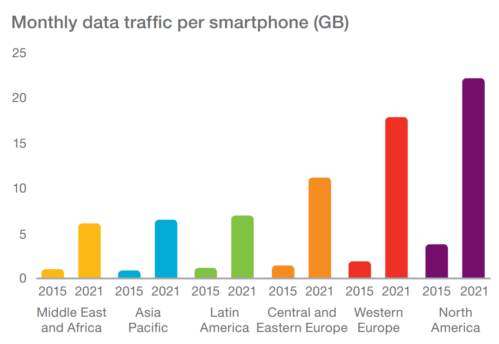
Bron: Ericsson Mobility Report June 2016
Focus Telco: Capaciteit
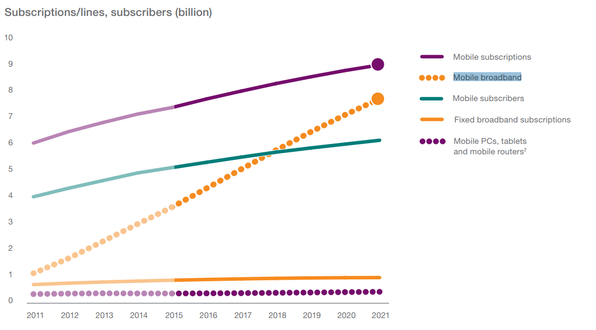
Bron: Ericsson Mobility Report June 2016
Focus Telco: Standaarden
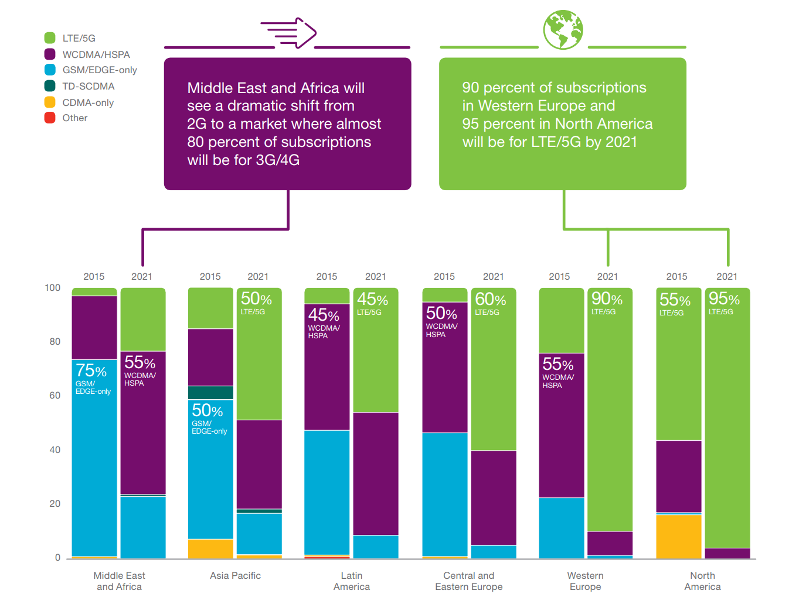
Bron: Ericsson Mobility Report June 2016
What about ...
LTE-M
- Infrastructuur is er deels
- Veel bagage
- Weinig tot geen tractie
- SIM Kaart ?
What about ...
NB - IOT
- Clean state
- Veel speculatie
- Eind 2017
- SIM Kaart ?
Kostenmodel M2M vs IOT
Esso
- Gefractioneerde Destillatie
- Weinig sensoren
- Lagee efficiëntie v/d gateway
- Hoge waarde v/d device data
- Hoge deployment kost
Parking in de stad
- Parkeerplaatsen Visualizer
- Veel sensoren
- Hoge efficiëntie v/d gateway
- Lage waarde v/d device data
- Lage deployment kost
Kost
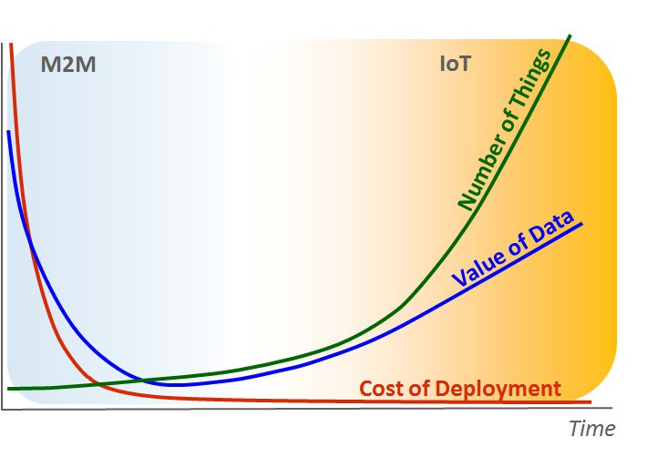
Bron: Nick Hunn - LoRa vs LTE-M vs Sigfox
Individuele Kost

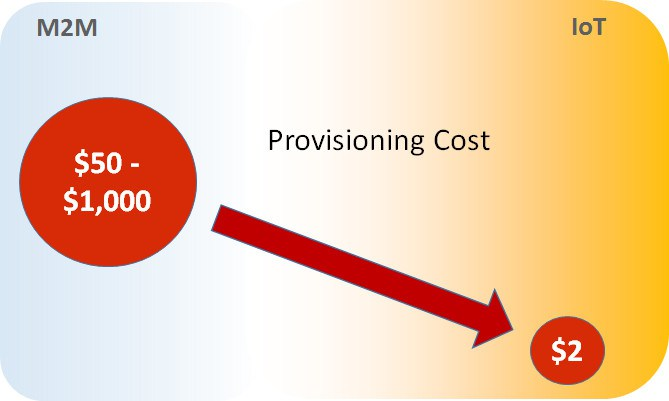
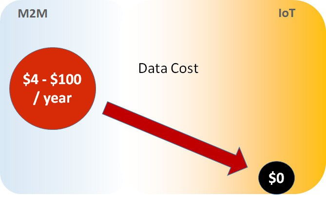
Bron: Nick Hunn - LoRa vs LTE-M vs Sigfox
Kost
- Clean state vs High IP footprint
- Auto vs Fiets
- Eenvoudige kost
Bron: Nick Hunn - LoRa vs LTE-M vs Sigfox
Kost
- Installatie
- Activatie
- SIM?
- Install & Forget
Bron: Nick Hunn - LoRa vs LTE-M vs Sigfox
Kost
- Facturatie / Device
- Pay Upfront
- Waarde / Sensor of Applicatie
Bron: Nick Hunn - LoRa vs LTE-M vs Sigfox
Besluit
- GSM is nog niet klaar voor IoT
- Er is nood aan een LPWA oplossing
- Mogelijke Opties
- Ze hebben tractie zelfs bij telco's
Low Power Wide Area Networks
Het heeft een grote kans ...

Bron: Ericsson Mobility Report June 2016
Sigfox
a global Internet of Things operator
Sigfox
- Frans bedrijf
- Prioritaire technologie
- Certified Device nodig
- In België door Engie
Sigfox Key Points
- 868 Mhz (EU)
- Ultra - Narrowband
- 12 bytes up
8 bytes down
- 140 msg/up
4 msg/down
- 100bps
- fixed energy budget
Sigfox Integreren
- Gecertificeerd Modem Oplossingen
- Gecertificeerd Referentie Designs
- Eigen modem
- Abbonementskost
LoRa(WAN)
- Long Range
- PHY is Gepatenteerd
- Chirp Spread Spectrum
- LoRa vs. LoRaWAN
- LoRa: PHY layer
- LoRaWAN: MAC, NWK, and APP built on LoRa
Chirp Spread Spectrum
Chirp
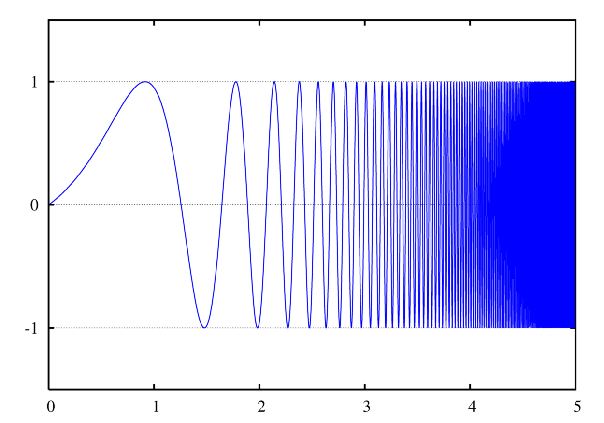
Chirp Spread Spectrum
Spread Spectrum
« 0 » - « 01001011101001110101011101111011 »
« 1 » - « 10011011011010101111101101110111 »
Chirp Spread Spectrum
Spread Spectrum
« 0 » - « 01001011101001110101011101111011 »
« 1 » - « 10011011011010101111101101110111 »
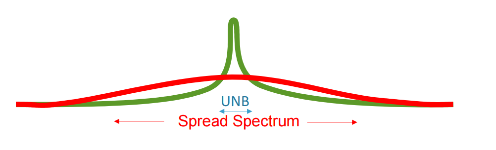
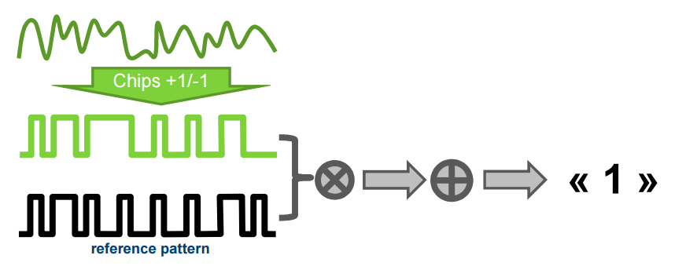
Chirp Spread Spectrum
Adaptive Data Rate
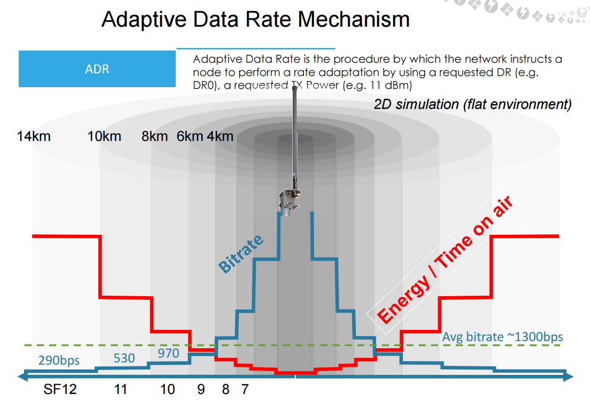
LoRaWAN Architecture
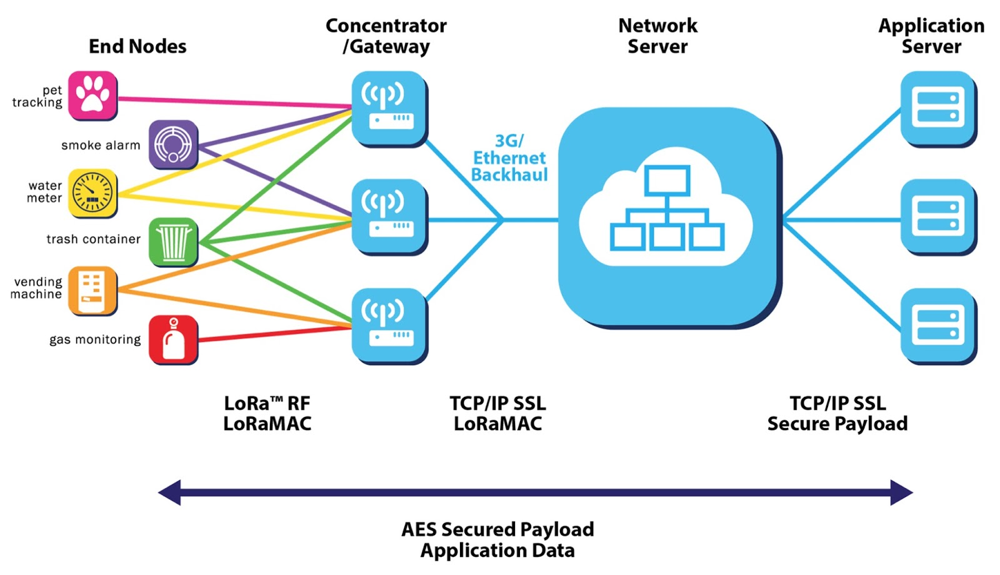
LoRaWAN Spelers Belgie
- Proximus (KPN)
- The Things Network
- Wireless Things
LoRaWAN Spelers Test Door Sodaq
- High Altitude Ballon
- 140km
- 3 Spelers